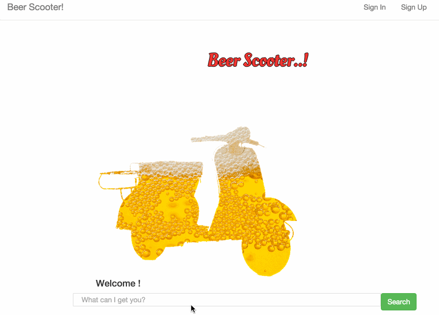

About
I am a full stack web developer from California, but after years in Japan and Texas, I am now based in Australia. I love bicycles, beer, 8-bit anything.
I specialize in applications built in Ruby, Javascript, and Python using web frameworks. I have been learning and playing with web programming since 2005.
Front-End Web Development
I have solid knowledge of HTML, CSS, javascript, jQuery, as well I have learned and worked with front-end frameworks like Backbone.js and Angular.js.
Back-End Web Development
A recent graduate of the General Assembly Web Development Immersive course, I have been trained in back-end development using Ruby on Rails, as it's a trusted industry framework for solid web development. I have also built projects using Sinatra, Node.js, Express.js and Google AppEngine. Over three months, I have built a foundation utilizing a broad range of experience with modern web applications and architecture.
And more!
Experience working with AWS S3, Heroku, Git, TDD/BDD with RSPEC &Jasmine, Websockets.io, Coffeescript, Sass, Less, Haml, Handlebars.js, Mustache, Canvas, Roguelikes
Previous Works
I grew up in a California print shop and have been proficient in Adobe's core suite since 1994. I have freelanced digital design for more than 15 years. For other fine examples of work in print or marketing, be sure to check out ryanpauley.com
Projects
Javascript Roguelike

Roguelike.website
Built with an desire to build a 100% Javascript HTML5 canvas game, RogueCity is roguelike creation made using the ROT.js library and Dominic Roy's tutorial. Making a full roguelike game was a challenge and the end result is 2500+ lines of javascript written in only five days. Future plans are to utilize the Node/Express.js back-end to realize a multi-player version using websockets.io!
Yaps.co
Yaps.co was built with two interests: make a multi-person chat using websockets and to experiment with the Reddit API and bring chat to the Reddit experience.
Initially the plan was to use a Rails backend, but we quickly realized that Node.js was the better choice. (20 lines of code, FTW!) Still, not wanting to delve completely, we maintained a Rails backend as well and were introduced to the fantastic world of CORS and the challenges of creating cross-platform bridges.
Parks & Recommendations
Parks & Recommendations was created out of a desire to have a listing of playgrounds (in the Canberra Area) to search for playgrounds by proximity to users, equipment, and age-appropriateness.
Users can leave comments and would be able to alert users and authorities to damage with the equipment.
BeerScooter
BeerScooter.com was created to create a beer-searching database based on proximity using user's mobile for location data.
The greatest challenge of BeerScooter was managing the database tables for Bars, Beers, Users, Checkins and various through-tables.
As we used Heroku to host our rails app, we ran into an issue with location-requests (as thousands of Heroku apps do the same) and the spyme gem, along with geocoder, helped us to get the user's location data despite server limits.